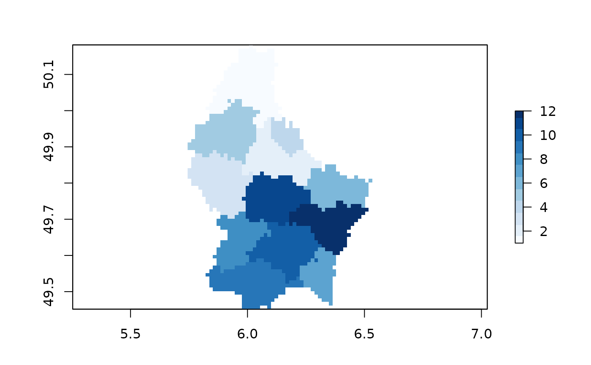
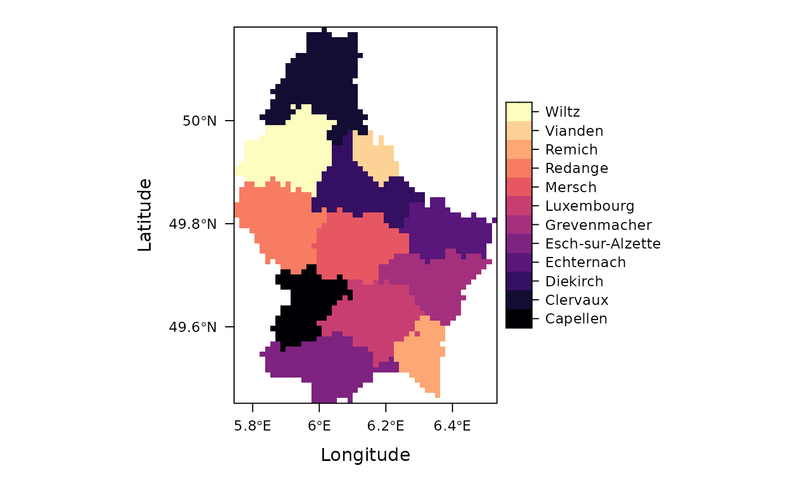

Polygon Rasterization Using Numeric, Factor, or Character Fields
Source:R/fasterizeDT.R
fasterizeDT.RdA front end for
fasterize::fasterize(), fixing
several of its infelicities.
Arguments
- x
Either an
sf::sf()object with a geometry column ofPOLYGONand/orMULTIPOLYGONobjects or asp::SpatialPolygonsDataFrameobject.- raster
A
RasterLayerobject to be used as a template for the raster output.- field
Character. The name of a column in
x, providing a value for each of the polygons rasterized. IfNULL(the default), all polygons will be given a value of1.- fun
Character. The name of a function by which to combine overlapping polygons. Currently takes
"sum","first","last","min","max","count", or"any". For more details, see?fasterize::fasterize.- background
Value to put in the cells that are not covered by any of the features of
x. Default isNA.- by
Character string giving the name of a column in
xby which to aggregate layers. If set,fasterizeDTwill return aRasterBrickwith as many layers as unique values of thebycolumn.
Value
A raster of the same size, extent, resolution and
projection as the supplied raster template. Unlike
fasterize::fasterize(),
fasterizeDT returns a raster of the same type as the
data in the column of x selected by the field
argument.
Details
Unlike other functions in this package, fasterizeDT() does
not use data.table to speed up its computations. Instead,
it is a wrapper for fasterize::fasterize(), intended to
address several of that function's limitations.
Most importantly, fasterizeDT() takes care to properly
handle rasterization operations in which either the template
RasterLayer or the selected polygon feature field is a
factor. Specifically, it always returns a raster whose type
(numeric or factor) and levels (if a factor) match that of the
spatial polygon attribute indicated by its field argument.
Second, when field specifies an attribute of class
"character", fasterizeDT() automatically converts it
to a factor and returns a factor raster. In this, it is unlike
both fasterize::fasterize() and
raster::rasterize(). Finally, unlike
fasterize::fasterize(), fasterizeDT() accepts as
inputs either sf::sf() objects or
sp::SpatialPolygonsDataFrame objects.
Examples
# \donttest{
## Load example polygons and prepare a template raster
if (require(raster)) {
SPDF <- shapefile(system.file("external/lux.shp", package = "raster"))
llratio <- 1/cos(pi * mean(coordinates(SPDF)[, 2])/180)
rr <- raster(extent(SPDF),
resolution = c(llratio * 0.01, 0.01),
crs = proj4string(SPDF))
## An integer-valued field produces a numeric raster
rInt <- fasterizeDT(SPDF, rr, field = "ID_2")
plot(rInt, col = colorRampPalette(blues9)(12))
## A character-valued field returns a factor raster
rFac <- fasterizeDT(SPDF, rr, field = "NAME_2")
if (require(rasterVis)) {
levelplot(rFac)
}
}

#> Loading required package: rasterVis
#> Loading required package: lattice

# }